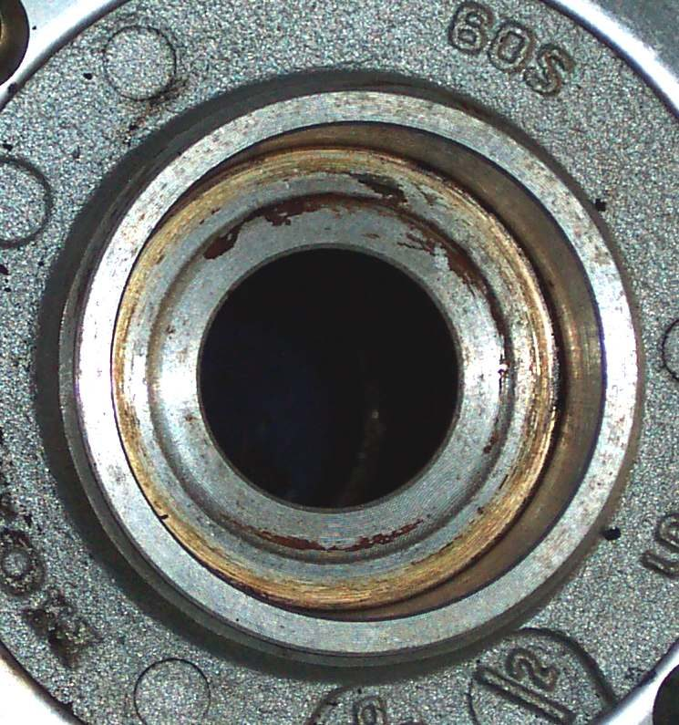

The hub is the centre of the wheel. The axle passes through it, the bearings sit in it, and the spokes (or the cast arms) tie it to the rim. On a drum brake wheel the brake drum is part of the hub. The brake disc and the rear sprocket bolt to it on other bikes.
What it does
The hub carries the load from the bike to the tyre. Two bearings and a spacer between them let it turn on the axle. Seals on each side keep grease in and water out. Hubs are usually aluminium, which expands when warm. Warming the hub gently makes bearings easier to remove and fit.
Signs it is worn or failing
- Rumble or play from the wheel: Rumbling or grinding from a wheel, Wheel moves sideways on the axle.
- Hub or drum very hot after a ride: Wheel hub or brake drum is very hot after riding.
- Loose or broken spokes at the hub flange: Spokes are loose or broken.
- A bearing bore that is worn, scored or cracked after a bearing was driven out badly.
When to replace it
Hubs rarely wear out. Replace one only if the bore no longer holds a bearing firmly, the flange or casting is cracked, or the spoke holes are damaged. A used wheel from a good donor is often the cheaper fix.
What to match when buying
- Number and size of spoke holes, if it is a laced hub.
- Bearing size and spacer length for your bike.
- Brake type: drum or disc mounting.
- Rear: sprocket carrier or sprocket bolt pattern.
Fitting notes
- Check the bearings first: Check wheel bearings.
- Drive bearings in by the outer race only, with the spacer fitted between them: Replace wheel bearings.
- On cast wheels, drive out bearings with a drift that rests on the bearing, not the casting. A slip can break the hub.